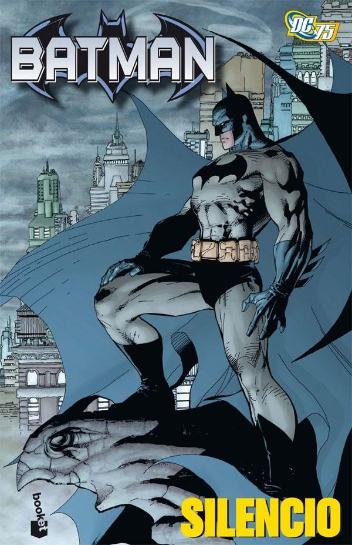
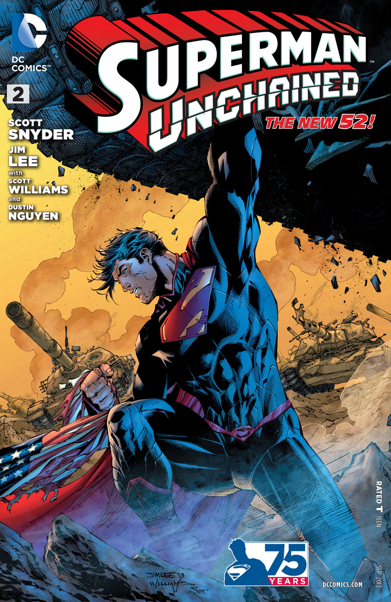

Batman: La Broma Asesina.La historieta comienza con la visita de Batman al manicomio Arkham para hablar con el Joker sobre...Batman: Silencio.Batman está rescatando a un niño secuestrado por Killer Croc, después de lo cual Catwoman roba el dinero del rescate. Mientras Batman se balancea a través de Gotham City en busca de...Spiderman: El Traje Alienígena.un simbionte llamado Krobaa fue traído a la Tierra y se vinculó con el profesor que lo encontró para adquirir (a través de la simbiosis) el conocimiento de...X-Men: La Canción del Verdugo.Mientras Cable estuvo ausente, Stryfe aprovechó la situación, y haciéndose pasar por Cable, llevó a cabo un intento de...Superman: Unchained.Superman detiene 7 satélites que iban a chocar en la tierra, dejando que un octavo golpeara una base militar abandonada. Superman sospecha...